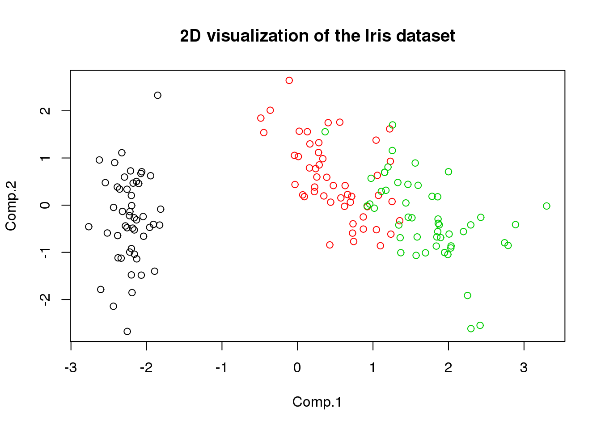
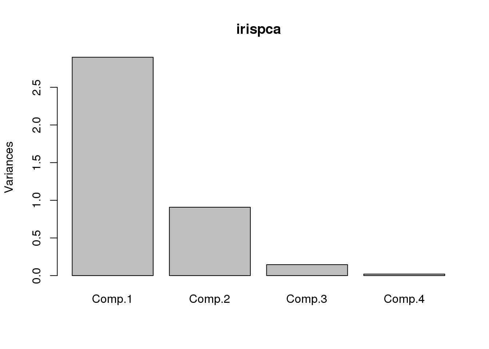
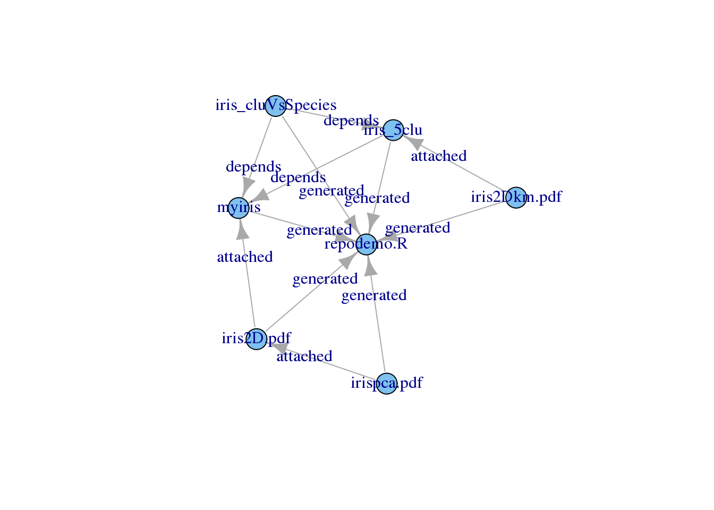
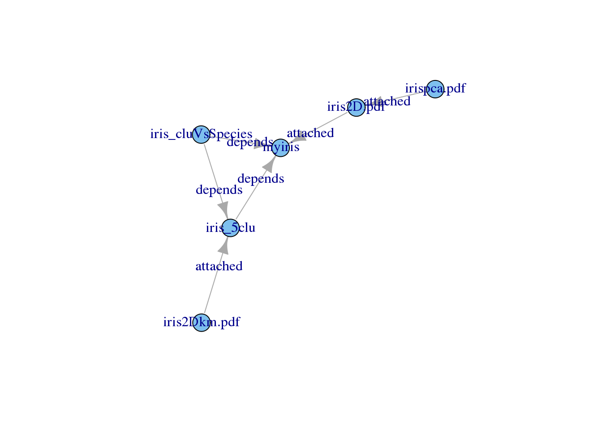

Getting started with the repo R Data Manager
Francesco Napolitano
Mon Jun 29 00:33:45 2015
“Thou Shalt Not save() Or load()”
first commandment of the repo user
Introduction
This is a short getting started guide to the repo package, which implements an R objects repository manager. Instead of manually storing and retrieving R objects into and from the appropriate directories and files, repo offers an abstraction layer that takes care of storing, retrieving and sorting the objects. For each stored object, you provide a name, a description, a list of tags and optional dependence and provenance information. Repo will store the object together with all the metadata an provide easy access to it. Repo can display a compact list of all the items stored and provide search by tags, load in the workspace, remove from disk, export to RDS files, edit metadata, manage provenance traces, show dependency graph and more. In the following, an example of use will guide you through the main features of repo.
Preparation
Here we define some global variables and load the necessary libraries. First of all, in order to use repo, we load the repo library:
# library(repo)Among annotations that can be added to items stored in the repo there’s the provenance trace, which basically answers the question: where does this come from? The following string will be used as a provenance trace for all the data produced by this script. It is basically the full path to the file containing this script (the documentation you’re reading has ben generated by a script called repodemo.R).
src <- normalizePath("repodemo.R")However, to hide paths from my disk, here I will owerwrite src with the following:
src <- "repodemo.R"This command creates a new repon in “./repodemo” or open an existing one in the same directory. To avoid confirmation requests during the generation of this document, they’re turned off through the forceYes parameter. The variable repo will be used as the main interface to the repository. I’m suppressing messages to hide personal info.
repo <- suppressMessages(repo_open("repodemo"))The knitr library is loaded just for the function kable, used in this demo to pretty-print tables. I also set a knitr option just for cosmetic reasons.
library(knitr)
opts_chunk$set(comment=NA)Populating a repository
First of all, we will populate the repository with some data, starting with the Iris dataset (included in most R distributions). We will perform a dimensionality reduction through Principal Component Analysis (PCA) and a clustering through K-means. We will store the data into the repo and attach some visualizations. Attached items are generated from generic files on the disk as opposed to R objects.
Storing a dataset
The Iris dataset is readily found in the datasets R package. However, we will store our normalized version of it in the repo. We will separately store the normalized data matrix and the class labels. The code for normalization will be a simple call to scale:
myiris <- scale(as.matrix(iris[,1:4]))In order to properly store our normalized myiris, we will need to call repo$put and provide the following parameters:
obj The varialbe containing the object that we want to store: myiris.
name An identifier for the variable. At the moment any string is accepted, but this may change in favour of sanitized names. Best practice is to use a short name without special characters.
description A verbose description of the variable contents.
tags A set of tags. Tags are used to subset the repo for many purposes, for example if you want to be able to select only items produced by this script, make sure to add one tag accordingly (repodemo in this case).
src The source that generated the data, that is the file name containing this script.
replace A boolean that tells repo wether to overwrite an existing entry by the same name. I set it to true so that I can run this script repeatedly without issues. (This documentation is generated from an R script).
Thus, the following call to the put method will store the contents of myiris in the repo. The data will be actually saved in the repo root in RDS format.
repo$put(obj = myiris,
name = "myiris",
description = paste("A normalized version of the iris dataset coming with R.",
"Normalization is made with the scale function with default parameters."),
tags = c("dataset", "iris", "repodemo"),
src = src,
replace=T)Attaching visualizations
The Iris dataset is 4D and PCA can be used to produce a 2D visualization. The following code produces such visualization and shows it:
irispca <- princomp(myiris)
iris2d <- irispca$scores[,c(1,2)]
plot(iris2d, main="2D visualization of the Iris dataset", col=iris$Species)
Wouldn’t it be cool to store the visualization in the repo and somehow link it to the iris data? This can be done exploiting the attach method, which can store any file in the repo as is, together with usual annotations (description, tags, etc.). Internally, attach calls put, so it is very similar. Two differences in the parameters of this call are worth noting:
filepath Instead of an identifier, attach takes a file name (with path). The file name will be also the item identifier. This behaviour can be overridden by calling put with the asattachment parameter set to TRUE.
to This parameter tells repo which item this one is attached to.
pdf("iris2D.pdf")
plot(iris2d, main="2D visualization of the Iris dataset", col=iris$Species)
invisible(dev.off())
repo$attach("iris2D.pdf", "Iris 2D visualization obtained with PCA.",
c("visualization", "iris", "repodemo"), src, replace=T, to="myiris")attach actually makes a copy of the attached file to the repo root, so we can get rid of the copy in the working directory:
invisible(file.remove("iris2D.pdf"))But is the 2D visualization good enough for a 4D dataset? This can be checked by looking at the PCA eigenvalues, as follows.
plot(irispca)
In the future, when I look at the 2D visualization, I want to remember its “accuracy” according to the PCA eigenvalues. So I will attach the plot of the PCA eigenvalues to the plot of the 2D visualization. This is attaching to an attachment and it’s ok.
pdf("irispca.pdf")
plot(irispca)
invisible(dev.off())
repo$attach("irispca.pdf", "Variance explained by the PCs of the Iris dataset",
c("visualization", "iris", "repodemo"), src, replace=T, to="iris2D.pdf")
invisible(file.remove("irispca.pdf"))Storing some results
The following code makes a clustering of the Iiris data and stores it in the repo. There still one more interesting parameter here:
- depends This tells repo that, in order to compute the kiris variable containing the clustering, I need data previously stored, that is myiris. This dependency annotation is not mandatory at all, however it helps to keep things sorted as the repo grows.
kiris <- kmeans(myiris, 5)$cluster
repo$put(kiris, "iris_5clu", "Kmeans clustering of the Iris data, k=5.",
c("metadata", "iris", "kmeans", "clustering", "repodemo"), src,
depends="myiris", T)Let’s see what the clustering looks like. This is the same 2D visualization as before, except that colors are given by clustering labels instead of class labels. Just for the purpose of making the repo a bit more interesting, we will add put this visualization. Note the dependency.
plot(iris2d, main="Iris dataset kmeans clustering", col=kiris)
Not so nice, but who cares! Let’s put it in the repo:
pdf("iris2Dkm.pdf")
plot(iris2d, main="Iris dataset kmeans clustering", col=kiris)
invisible(dev.off())
repo$attach("iris2Dkm.pdf", "Iris K-means clustering.",
c("visualization", "iris", "clustering", "kmeans", "repodemo"), src,
replace=T, to="iris_5clu")
invisible(file.remove("iris2Dkm.pdf"))Finally, let’s compute a contingency table of the classes versus clusters and store it in the repo. For some reason, we don’t really care about this precise result, but we want it in the repo in case we need it in the future. This is why we add the reserved tag hide, which will prevent this item from being shown by default. Attachments are automatically hide-tagged by default.
res <- table(iris$Species, kiris)
repo$put(res, "iris_cluVsSpecies",
paste("Contingency table of the kmeans clustering versus the",
"original labels of the Iris dataset."),
c("result", "iris","validation", "clustering", "repodemo", "hide"),
src, c("myiris", "iris_5clu"), T)Looking at the repository
In this section we will have a look at the repository just created, as a whole. In particular, we will show a summary of the repo and its dependency graph
Repository summary
The info method provides details about repo items, but when called without orguments it shows some self-explaining information about the repo:
repo$info()Root: ~/git/bbuck/repo/repodemo
Number of items: 6
Total size: 18.36 kB Listing items
The repo library supports an S3 print method that shows the contents of the repo. All non-hidden items will be shown, together with some details, which by defaults are: name, dimensions, size.
repo ## by default resolves to print(repo) ID Dims Tags Size
myiris 150x4 dataset, iris, repodemo 1.82 kB
iris_5clu 150 metadata, iris, kmeans, clustering, repodemo 113 BAs expected, hidden items are not shown. Use the following to make all the items appear:
print(repo, all=T) ID Dims
myiris 150x4
@iris2D.pdf -
@irispca.pdf -
iris_5clu 150
@iris2Dkm.pdf -
iris_cluVsSpecies 3x5
Tags Size
dataset, iris, repodemo 1.82 kB
visualization, iris, repodemo 5.84 kB
visualization, iris, repodemo 4.38 kB
metadata, iris, kmeans, clustering, repodemo 113 B
visualization, iris, clustering, kmeans, repodemo 6.03 kB
result, iris, validation, clustering, repodemo, hide 180 BItems can also be listed selectively. With the following call, only items tagged with “clustering” will be shown:
print(repo, tags="clustering", all=T) ID Dims
iris_5clu 150
@iris2Dkm.pdf -
iris_cluVsSpecies 3x5
Tags Size
metadata, iris, kmeans, clustering, repodemo 113 B
visualization, iris, clustering, kmeans, repodemo 6.03 kB
result, iris, validation, clustering, repodemo, hide 180 BAll attachments have the attachment tag, so they can be selectively visualized this way:
print(repo, tags="attachment", all=T) ID Dims Tags
@iris2D.pdf - visualization, iris, repodemo
@irispca.pdf - visualization, iris, repodemo
@iris2Dkm.pdf - visualization, iris, clustering, kmeans, repodemo
Size
5.84 kB
4.38 kB
6.03 kBFor the same reasons, one may want to show only hidden items:
#print(repo, tags="hide", all=T)Finally, also the columns shown can be slected. Let’s show only the tags:
#repo$print(show="t", all=T)Showing dependencies
In the previous sections we set dependencies for some items, in order to remember that they needed other items to be computed. In addition, some items were stored as attachment to other items. Finally, we annotated all the items as being produced by this script. In repo, all these relations are summarized in the dependency graph. The formal representation of the graph is a matrix, in which the entry (i,j) represent a relation from i to j of type 1, 2 or 3 (dependency, attachment or generation). Here’s how it looks like:
depgraph <- repo$dependencies(plot=F)
kable(depgraph)| myiris | iris2D.pdf | irispca.pdf | iris_5clu | iris2Dkm.pdf | iris_cluVsSpecies | repodemo.R | |
|---|---|---|---|---|---|---|---|
| myiris | 0 | 0 | 0 | 0 | 0 | 0 | 3 |
| iris2D.pdf | 2 | 0 | 0 | 0 | 0 | 0 | 3 |
| irispca.pdf | 0 | 2 | 0 | 0 | 0 | 0 | 3 |
| iris_5clu | 1 | 0 | 0 | 0 | 0 | 0 | 3 |
| iris2Dkm.pdf | 0 | 0 | 0 | 2 | 0 | 0 | 3 |
| iris_cluVsSpecies | 1 | 0 | 0 | 1 | 0 | 0 | 3 |
| repodemo.R | 0 | 0 | 0 | 0 | 0 | 0 | 0 |
Omitting the plot=F parameter, the dependencies method will plot the dependency graph. This plot requires the igraph library.
repo$dependencies()
This is a small repo and all resources were created by the same script, so the “generated” edges are not interesting. The three types of edges can be shown selectively, so here’s how the graph looks like without the “generated” edges:
repo$dependencies(generated=F)
Accessing items in the repo
Of course, the only purpose of storing things is to retrieve them later, and this is why the most used command in repo is get. It’s meaning is very straightforward. The following command retrieves the variable myiris from the repo and loads it into the variable x in the current environment.
x <- repo$get("myiris")To get additional information about the entry, the info command can be used this way:
repo$info("myiris")ID: myiris
Description: A normalized version of the iris dataset coming with R. Normalization is made with the scale function with default parameters.
Tags: dataset, iris, repodemo
Dimensions: 150x4
Timestamp: 2015-06-29 00:33:46
Size on disk: 1.82 kB
Provenance: repodemo.R
Attached to: -
Stored in: /home/users/napolitano/git/bbuck/repo/repodemo/ae/8c/b5/ae8cb58a595aa3446f10e9fa4dfd4954
MD5 checksum: 3502270a48ecd8c798a026203327da70To be continued
This document is still in progress… please be patient.